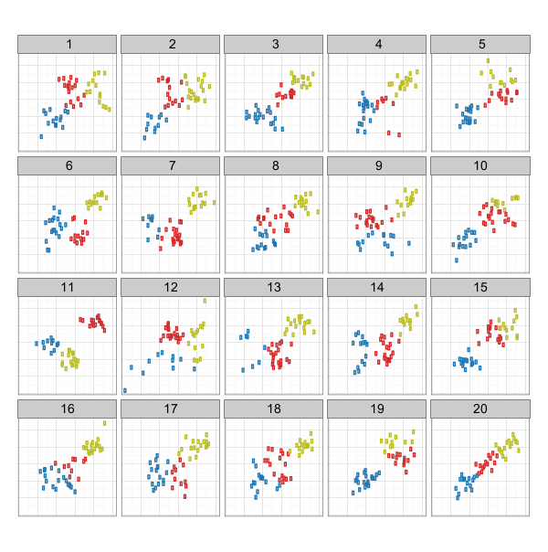
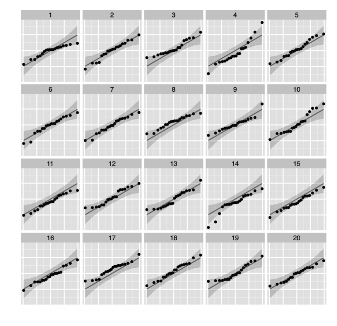
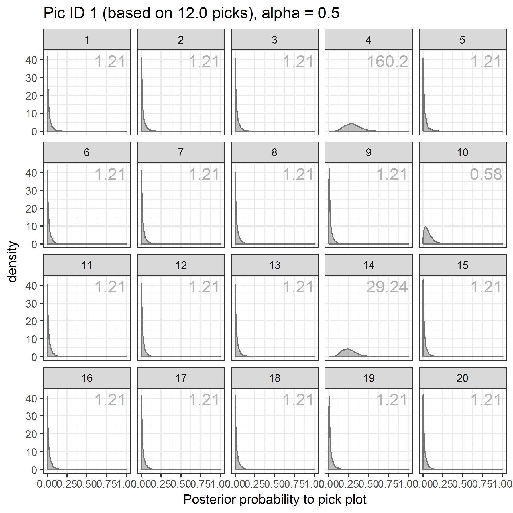
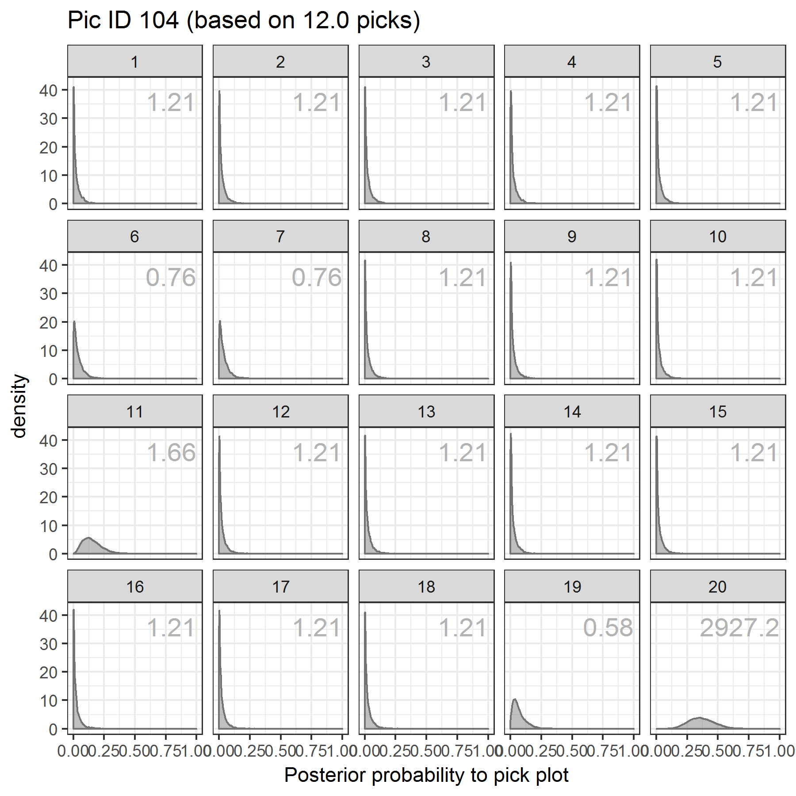
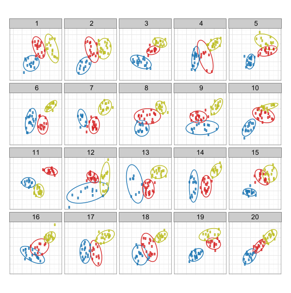
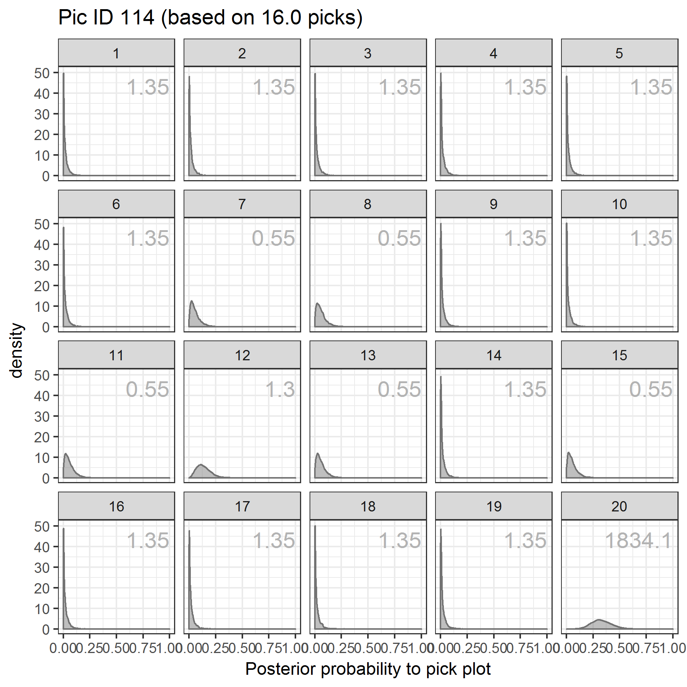

A Bayesian Approach to Visual Inference
Susan VanderPlas*, Eric Hare, and Heike Hofmann
Iowa State University
*Nebraska Public Power District
August 2, 2017
Outline
Introduction
Which plot is the most different?
|

Trend target: 20, Cluster target: 11 |
Visual Inference
Lineups consist of \(M\) plots (usually 20) which are evaluated by \(K\) individuals.
We can examine visual statistics (plots) and conduct tests using participant plot evaluations.
If most participants select a single plot, we conclude there's a visually significant difference.
Andrew Gelman proposed a less-formalized method of posterior predictive model checking in a [JCGS discussion article](http://www.stat.columbia.edu/~gelman/research/published/p755.pdf) in 2004
Frequentist Approach to Lineups
Frequentist Approach to Lineups
(Simple version)
\begin{align*} & m \text{ panels}, K \text{ evaluations}\\\\ H_0 &:= \text{all plots are equally likely to be selected}\\ H_1 &:= \text{one plot is visually distinguishable}\\\\ P(X \geq x) &= 1 - \text{Binom}_{K, 1/m}(x-1)\\ & = \sum_{i = x}^K \binom{K}{i} \left(\frac{1}{m}\right)^i\left(\frac{m-1}{m}\right)^{K-i} \end{align*}We reject \(H_0\) if the calculated p-value is less than 0.05
Frequentist Approach to Lineups
(Complex version)
- Evaluations of the same lineup aren't independent
- The
vinferenceR package calculates p-values accounting for this scenario (using simulation) - P-values from the
V3reference distribution are used for comparison purposes in this study
Bayesian Lineups
Multinomial Model for Lineups
- Data: counts \(c_i\), where \(\sum c_i = K\),
where \(c_i\) is the number of individuals selecting lineup plot \(i\) - Prior: \(\mathbf{p} \sim \) Dirichlet(\(\mathbf{\alpha}\))
- Likelihood: \(\mathbf{c} \sim\) Multinomial(\(K, \mathbf{p}\))
- Posterior: \(\mathbf{p}|\mathbf{c}, \mathbf{\alpha} \sim \) Dirichlet(\(\mathbf{\alpha} + \mathbf{c}\))
This model accounts for all panels in a lineup
Beta-Binomial Model
The marginal distributions of the Multinomial model reduce to Beta-Binomials, each representing one panel of the lineup.
- Data: count \(c\), out of \(K\) evaluations
- Prior: \(p \sim\) Beta(\(\alpha, (m-1)\alpha\))
- Likelihood: \(c \sim \) Binomial(\(K, p\))
- Posterior: \(p | c, K, \alpha \sim\) Beta(\(\alpha + c, (m-1)\alpha + K - c\))
We will mostly work with the beta-binomial/marginal models
Approach
- All models will be of the Multinomial (multidimensional) or Beta-Binomial form
- The hyperparameters for the prior will change to reflect one of two possible options:
- All plots are equally likely to be selected (strong prior belief)
- One or more plots might be more likely to be selected,
but we don't know which ones (weak prior)
Model 1: Noninformative
Allow the evaluation data to dominate any prior beliefs
Model 2: Strongly Informative
We strongly believe all plots are equal
Model 2: Strongly Informative
But perhaps some plots are more equal than other plots?

Bayes Factors
We compare Model 1 to Model 2 using Bayes Factors
|  |
 |
Bayes Factors
\begin{align} M_1 & := \text{Beta-Binomial model with a weak prior}\nonumber\\ M_2 & := \text{Beta-Binomial model with strong prior, mass around }\alpha = 0.05\nonumber\\ BF & = P(M_1|c)/P(M_2|c)\\ & = \frac{\int_{p} P(M_1) f_1(c|p) \pi(p) dp}{\int_p P(M_2) f_2(c|p)\pi(p) dp}\nonumber \end{align} We will set the prior odds of $M_1$ to be equal to the prior odds of $M_2$, that is, $P(M_1) = P(M_2)$.Bayes Factors
\begin{align} BF(M_1, M_2) & = \frac{\int_p P(M_1) f(c_i, K|p) \pi_1(p) dp}{\int_p P(M_2) f(c_i, K|p) \pi_2(p)}\nonumber\\ & = \frac{P(M_1)}{P(M_2)} \frac{\int_p \binom{K}{c_i} p^{c_i}(1-p)^{K - c_i} \cdot \frac{1}{B(\frac{1}{2}, \frac{19}{2})} p^{-\frac{1}{2}}(1-p)^{-\frac{17}{2}}} {\int_p \binom{K}{c_i} p^{c_i}(1-p)^{K - c_i} \cdot \frac{1}{B(20, 380)} p^{19}(1-p)^{379}}\nonumber\\\\ & \text{... more math...}\\\\ & = \frac{B(20, 380)}{B(\frac{1}{2}, \frac{19}{2})} \frac{B(c_i + \frac{1}{2}, K - c_i + \frac{19}{2})}{B(c_i + 20, K - c_i + 380)} \end{align}Bayes Factors
|
 |
Bayes Factors
|  |
 |
Comparing Frequentist and Bayesian Methods
- p-values aren't meaningful beyond "Is it less than 0.05",
The larger the Bayes Factor, the more evidence for Model 1 over Model 2 - The two methods evaluate the same hypotheses
- Do they result in similar conclusions?
Comparing Frequentist and Bayesian Methods
Simulation
100iterations of:- Lineups with 20 panels, with
20evaluations - Generate data with \(x\) target plot selections; remaining evaluations are distributed among null plots, 0\( \leq x \leq \)
20
- Lineups with 20 panels, with
- Calculate the Bayes Factor and
V3p-value for each scenario
Simulation Results
Simulation Results
Simulation Results
Simulation Results
Comparison to V3 p-values
Discussion
Conclusions
- Bayes Factors work nicely to determine which panels do not conform to the "equally likely" hypothesis
- Bayes Factors are nicer to work with than p-values (big numbers are easier to grasp)
- Two-target lineups are conceptually easier to handle with Bayes Factors
Future Work
- Explore alternate models which would better represent the "equally likely" hypothesis
- Explore the sensitivity of the bayes factor to prior specifications for both models
More Information
- Github Repository (Data, paper, code)
http://github.com/heike/bayesian-vinference/ - JCGS Paper: Clusters Beat Trend!? Testing Feature Hierarchy in Statistical Graphics
http://www.tandfonline.com/doi/abs/10.1080/10618600.2016.1209116 - Vinference Github Repository - p-value calculations for lineups
http://github.com/heike/vinference/